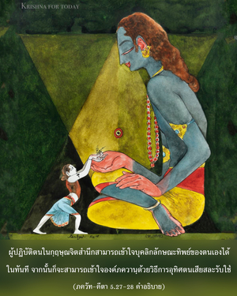

ปิดกั้นอายตนะภายนอกทั้งหมด กำหนดดวงตาและสายตา ทำสมาธิระหว่างคิ้วทั้งสองข้าง หยุดลมหายใจเข้าออกภายในจมูก และควบคุมจิตใจ ประสาทสัมผัส และปัญญา นักทิพย์นิยมตั้งเป้าหมายอยู่ที่ความหลุดพ้น เป็นอิสระจากความต้องการ ความกลัว และความโกรธ ผู้ที่อยู่ในระดับนี้เสมอหลุดพ้นแน่นอน


ผู้ปฏิบัติตนในกฺฤษฺณจิตสำนึกสามารถเข้าใจบุคลิกลักษณะทิพย์ของตนเองได้ในทันที จากนั้นก็จะสามารถเข้าใจองค์ภควานฺด้วยวิธีการอุทิศตนเสียสละรับใช้ เมื่อสถิตอย่างดีในการอุทิศตนเสียสละรับใช้ท่านได้ไปถึงสถานภาพทิพย์ และมีคุณวุฒิพอที่จะรู้สึกว่าองค์ภควานฺทรงปรากฏอยู่ในโลกแห่งกิจกรรมของตัวท่าน สภาวะโดยเฉพาะเช่นนี้เรียกว่าความหลุดพ้นอยู่ในองค์ภควานฺ
หลังจากได้อธิบายหลักข้างต้นเกี่ยวกับการหลุดพ้นอยู่ในองค์ภควานฺพระองค์ทรงให้คำสั่งสอนแด่ อรฺชุน ว่าเราจะสามารถมาถึงสถานภาพนี้ด้วยการปฏิบัติการเข้าฌาน หรือโยคะที่ทราบกันโดยทั่วไปว่า อษฺฏางฺค-โยค ซึ่งแยกออกไปเป็นแปดวิธีเรียกว่า ยม, นิยม, อาสน, ปฺราณายาม, ปฺรตฺยาหาร, ธารณา, ธฺยาน และ สมาธิ ในบทที่หกจะอธิบายเรื่องโยคะอย่างละเอียด และในท้ายบทที่ห้าจะอธิบายเฉพาะพื้นฐานเท่านั้น เราต้องนำพาตัวเองให้ออกจากอายตนะภายนอก เช่น เสียง สัมผัส รูป รส และกลิ่นด้วยวิธีโยคะของ ปฺรตฺยาหาร จากนั้นกำหนดสายตา และดวงตา ระหว่างคิ้วทั้งสองข้าง และตั้งสมาธิอยู่ที่ปลายจมูก พร้อมทั้งปิดเปลือกตามาครึ่งหนึ่ง ไม่มีประโยชน์ในการปิดตาทั้งหมด เพราะมีโอกาสที่จะหลับได้มาก และไม่มีประโยชน์อันใดในการเปิดตาทั้งหมด เพราะเสี่ยงที่จะไปหลงใหลกับอายตนะภายนอก การเคลื่อนไหวของลมหายใจควบคุมให้อยู่ภายในโพรงจมูก ด้วยการปรับลมเดินขึ้นและลมเดินลงให้เข้ากันอยู่ภายในร่างกาย ด้วยการฝึกโยคะเช่นนี้จะสามารถควบคุมประสาทสัมผัส หลีกเลี่ยงจากอายตนะภายนอก และเตรียมตัวเองเพื่อความหลุดพ้นในองค์ภควานฺ
วิธีการโยคะนี้ช่วยให้เป็นอิสระจากความกลัว และความโกรธทุกชนิด จากนั้นจะรู้สึกว่าอภิวิญญาณทรงปรากฏอยู่ในสภาวะทิพย์ อีกนัยหนึ่ง กฺฤษฺณจิตสำนึกเป็นวิธีง่ายที่สุดในการปฏิบัติตามหลักธรรมโยคะ เรื่องนี้จะมีการอธิบายโดยละเอียดในบทต่อไป อย่างไรก็ดี บุคคลในกฺฤษฺณจิตสำนึกปฏิบัติด้วยการอุทิศตนเสียสละรับใช้อยู่เสมอ จึงไม่ต้องเสี่ยงในการสูญเสียประสาทสัมผัสของตนไปในการปฏิบัติอย่างอื่น ซึ่งเป็นวิธีการควบคุมประสาทสัมผัสที่ดีกว่า อษฺฏางฺค-โยค